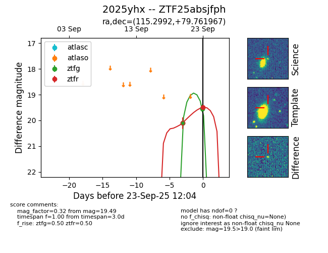
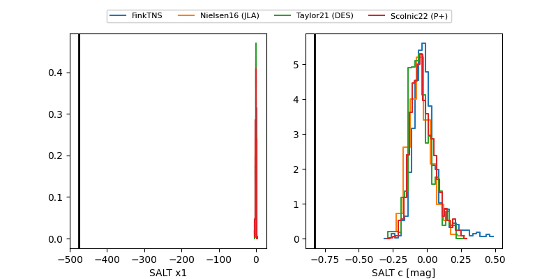

FINK: ZTF25absjfph
Lasair: ZTF25absjfph
ALeRCE: ZTF25absjfph
TNS: 2025yhx
YSE: 2025yhx
ZTF25absjfph (ztf,fink)
2025yhx (tns,yse)
equatorial (ra, dec) = (115.2992,+79.76197)
galactic (l, b) = (134.3633,+28.86834)


last ztfg=19.54, ztfr=19.49
3 ztfg, 1 ztfr detections